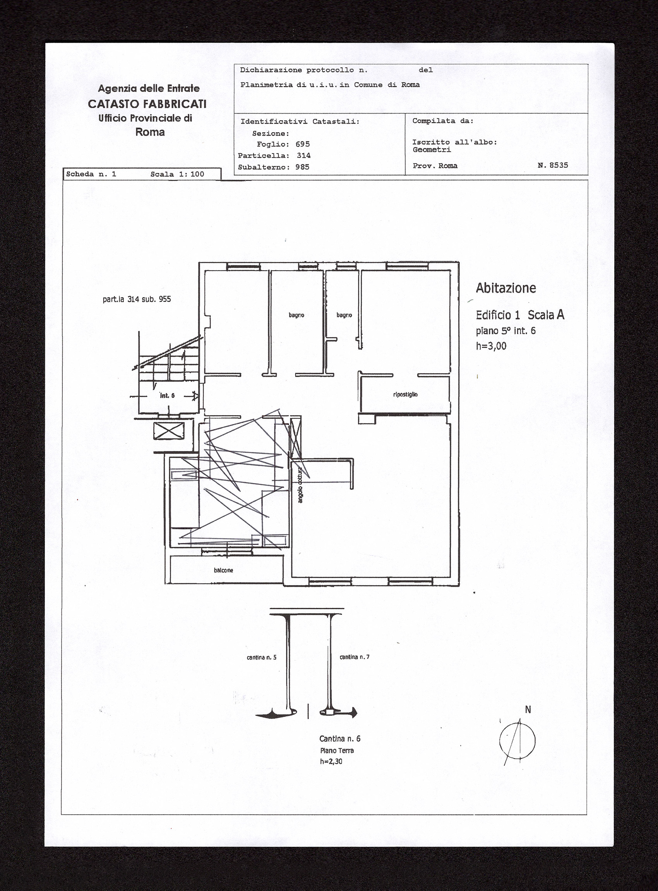
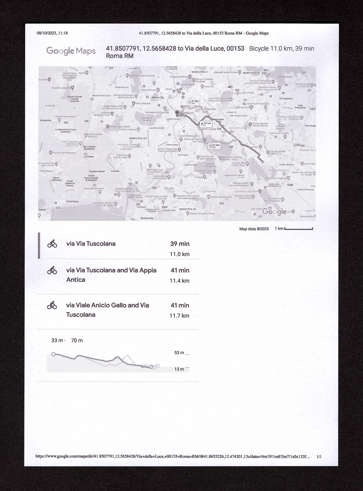
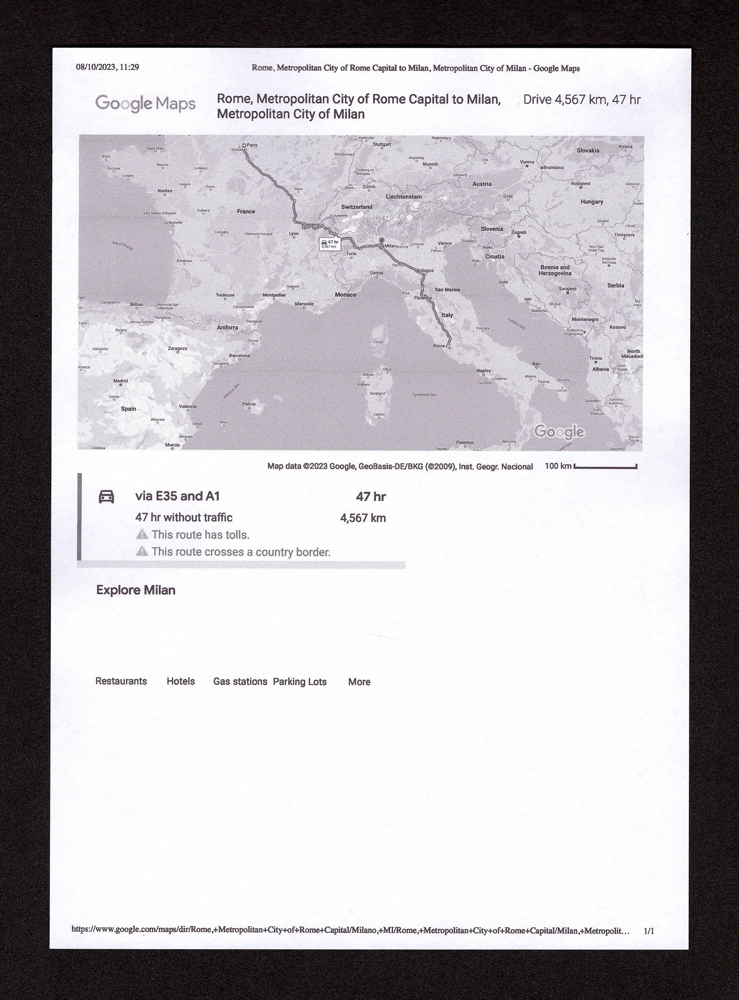

2023
Plastic
8 x 3 x 3 cm
totem /ˈtoʊtəm/ n. [from an Algonquian indigenous term, ototeman
(denoting kinship relations among siblings)]. – (ethnol.) [an animal,
plant, object, or phenomenon that, in animistic cultures, is the object
of taboo and worship].
August 2021 — August 2023
This pig is ugly, it’s dirty, picked up off the street by my brother.
Once home, it’s placed on my nightstand. My brother and I split the same
room, a shared space with personal areas: bed, nightstand, bookshelf,
and walls, one side and the other. Finding the pig on my nightstand, I
move it to my brother’s. My brother, finding the pig on his nightstand,
moves it back to mine. Over time, the pig is hidden in less obvious
spots: behind books or objects, among shelves, inside lamps,
pillowcases, shoes, cereal boxes. My brother moves to another
neighborhood, and the pig begins traveling from house to house, inside
backpacks and jacket pockets, smuggled in with the help of a friend or
secretly slipped into luggage before leaving — for Milan, where I move,
or Paris, where my brother moves. The object becomes an involuntary
representation of our relationship. It’s a tacit game, a way to meet.
It’s a dirty presence in the other’s space, an invasion, in a dialectic
of intimate agreement. The plastic pig is a totem of a fraternal bond.


The floor plan of our house with the pig's movements marked on it.

The distance traveled by the pig from our house to my brother's new
house.

The distance traveled by the pig from our house to my and my brother's new
house.